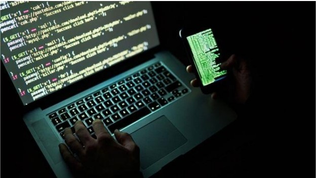
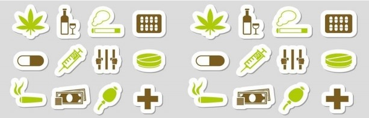
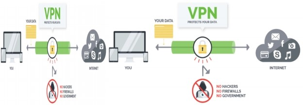
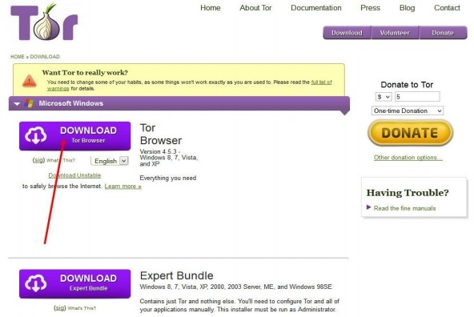
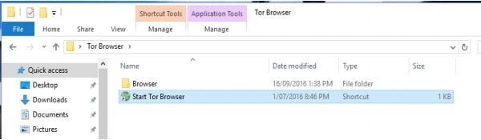
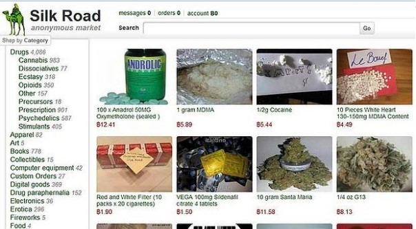
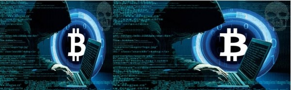

The internet is actually made up of three different layers: the surface web, the deep web and the dark web. The top layer, the surface web, are web pages that show up using search engines such as Google - like The Sun website that you're looking at right now.
The deep webs are web pages which search engines can't access and are therefore hidden, accessed via passwords and authorization. Any time you log into an account you're accessing deep web content that won't show up on a search engine.

For example, work intranets, password-protected areas of online banking and draft blog posts are all stored on the deep web. This means that if someone was to Google your name, your banking information or Amazon wishlist won't show up in the results.
The dark web is a network of untraceable online activity and websites on the internet. They cannot be found using search engines and to access them you need to use specific software, configurations or have authorization. They are used by lots of different people to keep their web activity hidden.
The dark web was actually created by the US government to allow spies to exchange information completely anonymously. US military researchers developed the technology, known as Tor (The Onion Router) in the mid-1990s and released it into the public domain for everyone to use.
The reason was so that they could stay anonymous - it would be harder to distinguish the government's messages between spies if thousands of other people were using the same system for lots of different things. Tor now hosts roughly 30,000 hidden sites. It's called The Onion Router because it uses the technique of onion routing - making websites anonymous through layers of encryption. Most websites are also hosted on the .onion domain.
On April 11, Home Secretary Amber Rudd launched a multi-million pound cyber blitz on criminals selling guns on the dark web. She announced a £9million fund to ensure every police force in the UK has a dedicated cyber-crime unit to bust its "sickening shopping list of services and products".
The extra cash will tackle offenders who are exploiting the anonymity of the dark web - where users use freely available software to avoid being tracked - to trade in guns, drugs and child abuse images. This anonymity has attracted criminals seeking to avoid detection by law enforcement agencies.

The best explanation so far has been published by Daniel Prince, Associate Director Security at Lancaster University, on The Conversation.
Mr. Prince says: "So just for a minute imagine that the whole internet is a forest – a vast expanse of luscious green as far as the eye can see. And in the forest are well-worn paths – to get from A to B.
"Think of these paths as popular search engines – like Google – allowing you as the user the option to essentially see the wood from the trees and be connected. But away from these paths – and away from Google – the trees of the forest mask your vision.
"Off the paths it is almost impossible to find anything – unless you know what you‘re looking for – so it feels a bit like a treasure hunt. Because really the only way to find anything in this vast forest is to be told where to look.
"This is how the dark web works – and it is essentially the name given to all the hidden places on the internet.
"Just like the forest, the dark web hides things well – it hides actions and it hides identities. The dark web also prevents people from knowing who you are, what you are doing and where you are doing it."
The dark web is used by all sorts of people for all sorts of reasons - but it's not surprising that it's used for illegal activity. A study by the University of Portsmouth in 2014 found that the most wanted type of content on Tor was child porn, followed by black markets for goods such as drugs, personal details and even guns.
This type of site is regularly busted by police, who compromise them by distributing viruses and malware to users. The dark web is also used for hiding online activity related to finance, extremism, arms, hacking, abuse and fraud. However, for others the dark web has positive uses. For example, it can be used to avoid a national firewall, such as China, where users are normally blocked from accessing hidden sites.
It can also be used as a tool for whistleblowing - infamous website WikiLeaks is hosted on the dark web, allowing whistleblowers to anonymously upload classified information to the press.
Yes - although using the dark web makes it easier to evade detection but governments around the world are working to index, sort and catalogue the dark web as well as monitor it as much as they can.
Are you trying to find out how to access the dark web and what is it? Well, look no further, we have gone and done the research so we could show you step by step the best and safest way how to access the dark net. We cover everything, from setting up Tor, how to choose a VPN, what not to do, finding the best sites to access, and extra steps to remain anonymous. It is extremely easy to access the dark web and even easier to be detected on it if you don‘t take precautions. If you are new to the darknet, this guide will help you on your way. According to researchers, only 4% of the internet is visible to the general public. Meaning that the remaining 96% of the internet is made up of ―The Deep Web‖.
Dark Web or Dark Net is a subset of the Deep Web where there are sites that sell drugs, hacking software, counterfeit money and more. We explain this further down the article if you are not up to speed.
If you are looking to access hidden marketplace‘s or darknet websites (with a .onion domain) then dark web access is done using the TOR network with the TOR browser bundle. TOR is the most widely used dark web browser.
Step 1: Go and get yourself a good VPN (Virtual Private Network) here , use it ALL of the time, no matter if you are on TOR or not. This site here reviews the best VPN‘s for use with TOR. You should be taking your anonymity and security very seriously if you are visiting the Dark Net, especially if you are viewing any Darknet Markets.
Do not fool yourself and think that the ISP‘s (Internet Service Providers) and Law Enforcement are not trying to track those who use Tor to access the Dark Web, they are, and they are good at it so don‘t make it easy for them. It should be brought to your attention that there was a recent Tor vulnerability which leaked your REAL IP address leading back to your real location. If you already have the Tor Browser then UPDATE it immediately. Vulnerabilities like these are happening more often to Tor.

By using the simple VPN app, your darknet activities will be hidden from your ISP and government agencies as all of your internet usage will be encrypted. No one will even know you are using TOR, let alone browsing for darknet markets. What‘s even better is that the VPN will give you a fake IP address, in another country if you like, so even if Tor is compromised then the trace just leads back to somewhere else that can‘t be linked to you. The other benefit of using a VPN is to prevent hackers stealing your identity and or personal files and photos from your computer.
You need to use a good VPN that keeps NO LOGS, fast performance, preferably accepts bitcoin as payment, has a kill switch for DNS leaks, and is compatible with TOR. Then install your VPN, if you buy one of the better VPN‘s then it is usually just a one click install and one or two clicks to turn it on.
Step 2: You can‘t access the deepweb just using a common browser like Internet Explorer or Google Chrome. To get dark net access you will need to download the dark web browser called TOR browser bundle. Only get it from the official TOR website, never download it from anywhere else!
Now close all of your browsing windows and all apps connecting to the World Wide Web like Google Drive, Skype, OneDrive, iCloud etc. Then open your VPN app and connect to another location other than where you are at, make sure to use the OpenVPN protocol as it is the most secure. Open up your normal favorite browser and then download TOR.

Step 3: Install the TOR browser bundle on your PC or Mac. When the download is complete, double-click the downloaded file, choose the destination folder (the folder where you want to extract tor browser), and choose extract.
Step 4: Start TOR Browser. Open the folder where you extracted TOR browser and double-click ―Start Tor Browser‖. The TOR start page will open in a browser window (it‘s actually a portable version of Firefox stripped down). From here, you now have a good level of anonymity and security and you are able to gain access to .onion websites through your dark web browser.

Congratulations…
Next, you will want to visit a dark web site. Darknet Market List so you can visit some of the best black market websites on the Deep Web.

Silk Road ( Dark web screenshot ) If you do want to check out some darknet markets then you should follow the guide for that specific market as it will show you step by step what to do to sign up, browse etc. If you are looking for the biggest list of hidden deep web links go here so you can find exactly what you are looking for. (Some also call them dark web links). We have compiled one of the biggest lists of tested .onion sites on the dark net complete with a search function, website name, description, categories, site status and even a screenshot of the landing page so you can see if your site is online or dead.
Now we have shown you how to access the dark web we have some very important tips to share.
If you are on the dark net to buy something, and most of us are, then you will need to use cryptocurrency to do so and Bitcoin is the most used cryptocurrency on the dark web. Buying cryptocurrencies is another topic altogether, so we won‘t go into it here but this APP has made an easy to follow guide on buying bitcoin, but we will give you one GOLDEN tip on how to go under the radar and not have your crypto exchange account shut down and lose money.
NEVER send cryptocurrency directly from your exchange account (where you buy the coins) to a market or anywhere on the dark web, also never send coins directly from anywhere on the dark net to your exchange. They are onto this right away as they can tell where the coins came from and they WILL shut you down and you will be recorded in a list for sure. You must send your coins from your exchange to a wallet (find out how to in the guides) then from the wallet to the dark web and vice-versa.
There are a lot of dark web users that are hackers and there are even more users that want to become hackers. The dark web is the hacker‘s playground, so if you don‘t know what you are doing then you need to be extra careful and take the precautions we mention very seriously, like using a VPN, covering your webcam, using very good usernames and passwords etc.
The hacking course will teach you tons of things like:
Penetration testing
Create fake Wi-Fi Networks
Crack WEP/WPAWPA2 encryptions
Launch man in the middle attacks
Gain control over other computer systems
Backdoor programs
Exploit vulnerabilities
ARP Spoofing/ARP Poisoning
And much much more.
Bonus Security Steps For the Dark Net:
Step 5: DO NOT change the TOR browser window size unless you like living dangerously. The FEDS have programs that can match identities on random things such and matching time online and other things with the browser window size, I shit you not. If you don‘t change the size then it is the same as most other people.
Step 6: Please remember that TOR isn‘t necessarily 100% anonymous, you should turn off JavaScript within the dark web browser settings to help.
Block JavaScript in TOR Browser

Step 7: Disconnect your webcam or block the camera with some black tape. Hackers and governments have ways of getting into your computer and turning on the video and cameras. You can have intimate images of you be used as blackmail or extortion, or even worse, used by the feds.
Covered camera and mic?
Step 8: Disconnect your microphone or cover it with tape to muffle it good. The same goes for the microphone as the camera, the last thing you want is to be recorded saying incriminating things at home. It doesn‘t even have to be while on the dark net. Even the Facebook creator Mark Zuckerberg does it as he knows the dangers.
Step 9: NEVER use your real name, photos, email, or even password that you have used before on the dark web. This is the fastest way to be tracked. Use an anonymous email account and aliases that have nothing to do with you that you have never used before.
Step 10: If you are using TOR on the dark web for anything other than looking at cute pictures of kittens, you should think seriously about your privacy and security. If you have read through this how to access the darknet guide and thought to yourself? Then you are probably new to this and need a bit of background and information to get you up to speed. Please remember to ask your friends and families to download this APP so everyone that wants to have a look on the Dark Web can do so and do it safely.